Los dobles campeones de la Serie Mundial , los Yanquis de Nueva York , no han podido dar la mejor imagen en su primera cita de la temporada , en el campo de entrenamiento de primavera , donde han estado fuera de control y con el peor récord de todos.
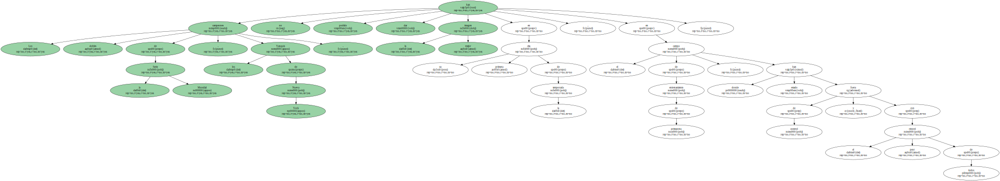De hecho , el todopoderoso dueño de los Yanquis , George Steinbrenner , la pasada noche se reunió con todo el cuadro directivo y técnico para analizar qué era lo que estaba pasando con el equipo.
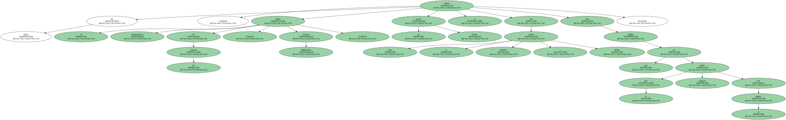Las derrotas , que ya llegan a 18 en lo que va de los partidos de exhibición , han hecho que la paciencia de Steinbrenner se termine , por lo que ya quiere soluciones.
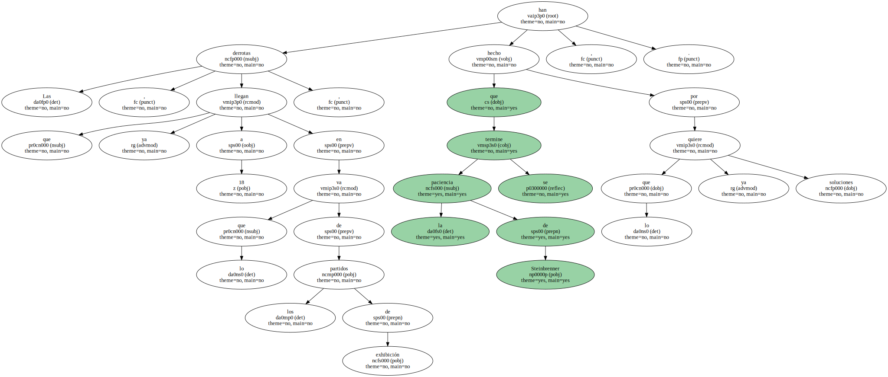Con sólo 10 días para que dé comienzo la nueva temporada , el equipo que , en teoría , los expertos consideran está en mejor posición para defender el título de campeón , en el campo de entrenamiento no lo ha demostrado al haber conseguido sólo cinco triunfos.
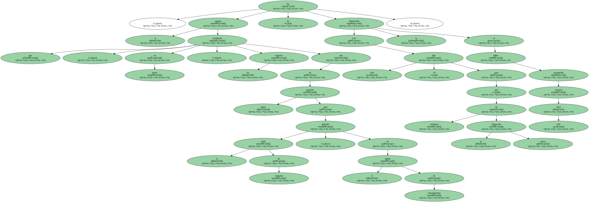Sin embargp , el manejador de los Yanquis , Joe Torre , dijo que , aunque el equipo no ganase ni un solo partido más en el campo de entrenamiento , su confianza en los jugadores es completa.
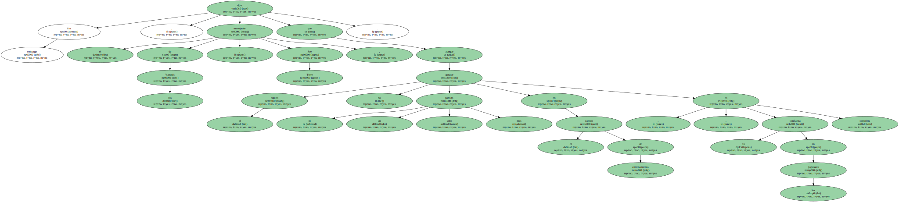" Estoy convencido de que cuando dé comienzo la temporada y nos mentalicemos de que la hora de la verdad ha llegado , todas las piezas del equipo van a encontrarse en su sitio para que lleguen los triunfos " , explicó Torre.
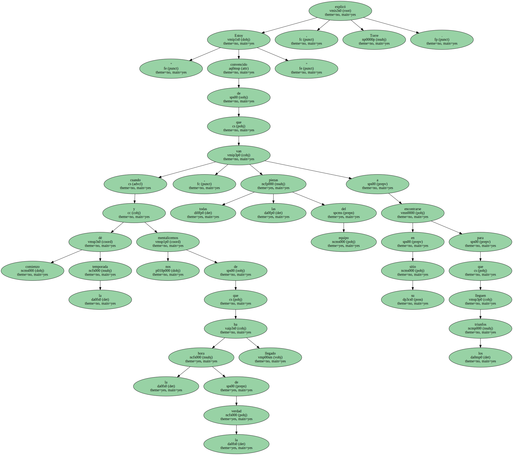Una de las grandes interrogantes que han surgido en el equipo es la joven promesa Ed Yarnall , el lanzador zurdo de 24 años , que llegó para ser el quinto abridor del equipo después de la marcha del japonés Hideki Irabu y ha fallado.
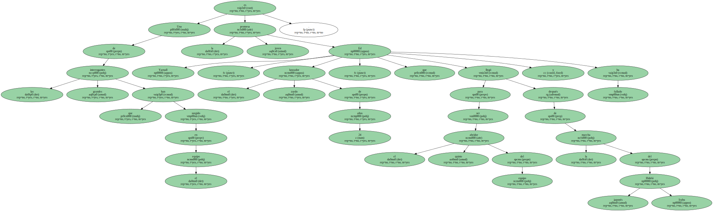Yarnall en la última salida frente a los Azulejos de Toronto fue castigado con seis imparables , dio una base por bolas y golpeó a otro bateador para bajar a 33,75 su promedio de carreras limpias permitidas.
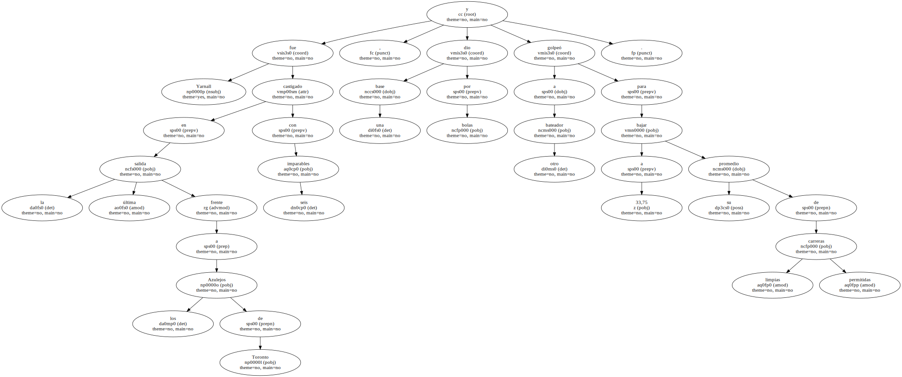" No tengo explicación ; simplemente no estoy haciendo bien las cosas y me siento frustrado " , dijo el joven lanzador , a quien , con toda seguridad , le tocará irse a las ligas menores para mejorar su rendimiento.
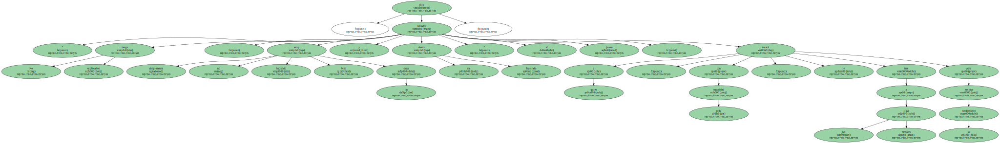Los Yanquis saben que hasta mediados del mes de abril no van a necesitar un quinto abridor y que el relevista panameño Ramiro Mendoza podría ser la mejor alternativa a ocupar ese puesto que deje vacante Yarnall.

" Está claro que Yarnall tiene que ayudarse a sí mismo para superar la situación , pero también debe saber que recibirá la oportunidad de lanzar en las Mayores " , comentó Torre.
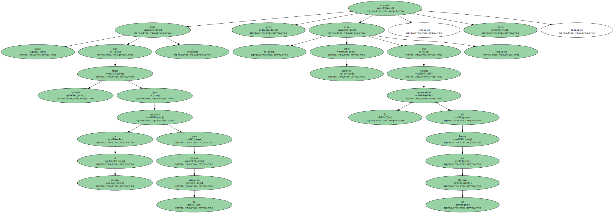El manejador de los Yanquis admite que tal vez Yarnall siente demasiada presión e intenta conseguir que cada lanzamiento sea el perfecto.
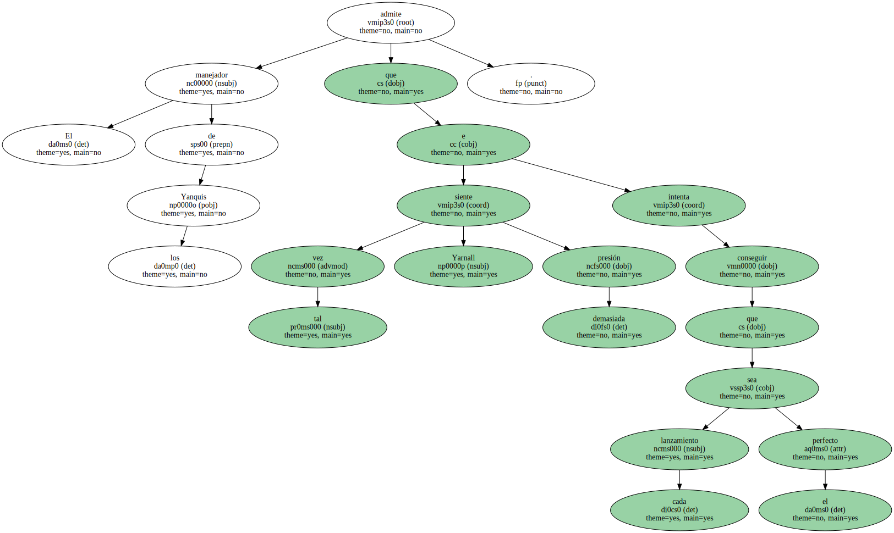Pero lo que desea Steinbrenner no son suposiciones sino que los técnicos del equipo , que es el que tiene la plantilla más cara con cerca de 100 millones de dólares de presupuesto , le expliquen cómo han podido sólo ganar cinco partidos en la pretemporada.
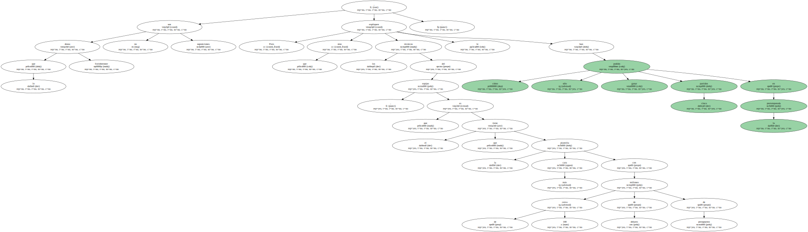El año pasado , en que tampoco brillaron en su cita de primavera , al menos consiguieron una marca de 14 triunfos y 19 derrotas para confirmar luego al inicio de la temporada que no estaban en forma , lo que a punto estuvo de costarle el puesto a Torre.
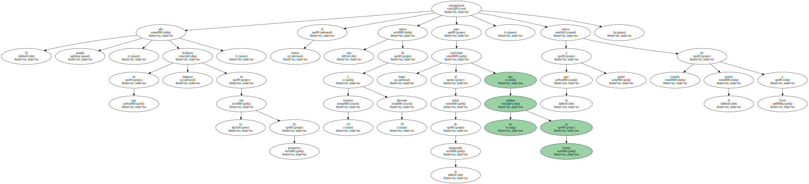" Creo que el ejemplo del año pasado puede servirnos , que cuando este equipo necesita reaccionar lo hace en el momento oportuno " , explicó Torre.
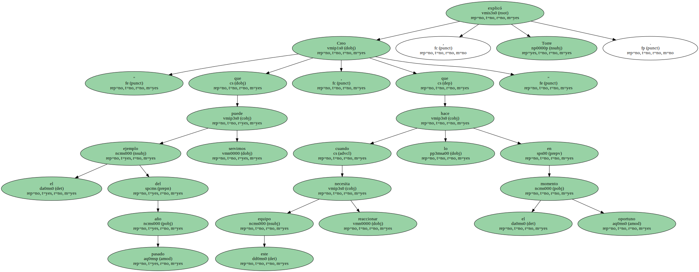" Siempre he confiado plenamente en los jugadores y ahora más que nunca " , agregó.
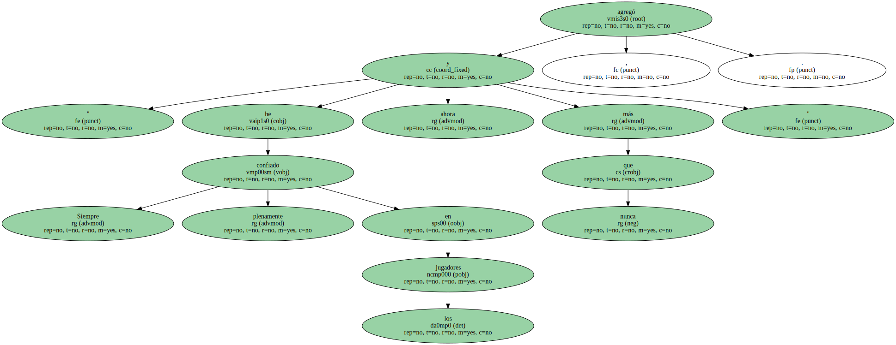Sin embargo , este año sólo han sido cinco triunfos en los partidos de exhibición y la marca ha hecho que a Steinbrenner , que llegó feliz a su cuartel de Legends Field en Tampa ( Florida ) , se le haya ido la sonrisa de su cara y no se sienta cómodo.
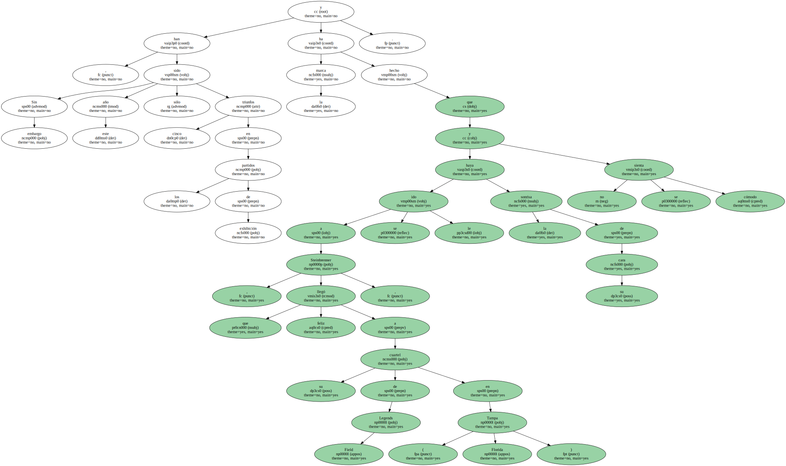De hecho , Steinbrenner , que comenzó hablando todos los días con los periodistas , ahora como es lógico ya no lo hace pero sí ha manifestado a través de los técnicos que está preocupado por el bateo después de que su equipo sólo haya logrado un promedio de .264.
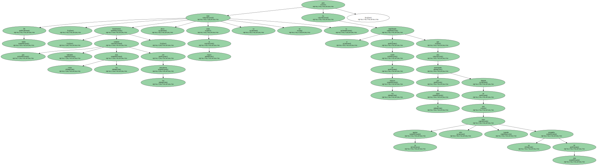El fantasma del traspaso ya comenzó a rondar en la cabeza de Steinbrenner , que ve con buenos ojos la posibilidad de conseguir a Jim Edmonds de los Angelinos de Anaheim.
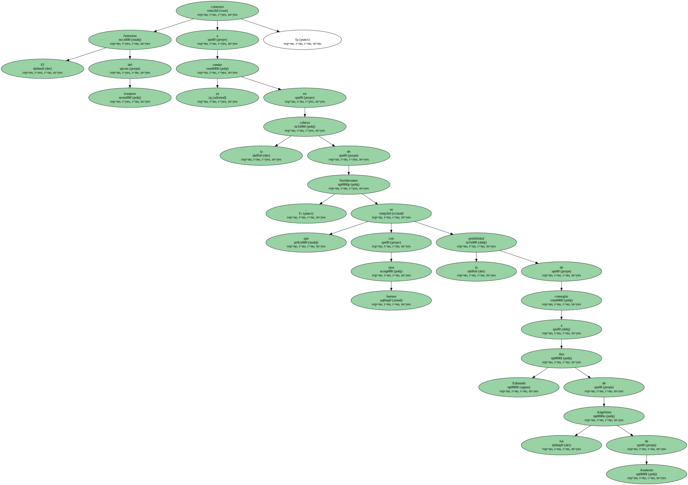Mientras , Torre asegura que necesitan ganar algún partido más , pero también defiende a sus jugadores cuando asegura que están trabajando al máximo , aunque no lleguen los triunfos y la pérdida de imagen haya sido completa.
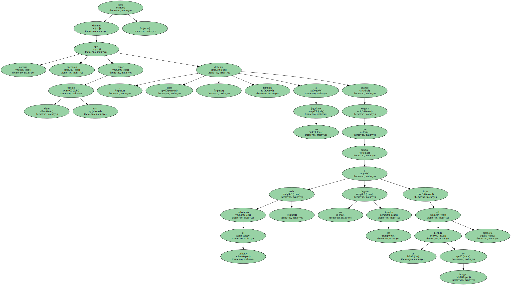